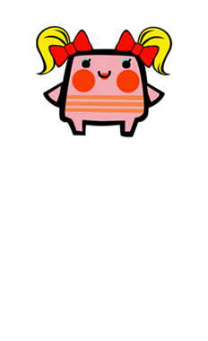
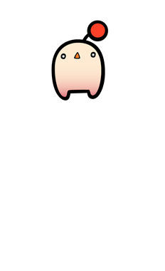

10 |
Écran de jeu |
 |
●Rattle Hero
Rattle Hero est ce qu'on pourrait appeler le héros du jeu, et tu le verras souvent au cours de tes parties. Selon le mini-jeu choisi, tu auras même le droit de le projeter dans le décor ! Rattle Hero possède tout un tas de frères de tailles et de couleurs différentes. Comme son nom l'indique, il aime beaucoup mesurer les choses et pèse environ 1 kilo.
●Rattlette
Rattlette est la petite amie de Rattle Hero, et elle aime beaucoup se déguiser avec plein de costumes différents. C'est même extrêmement rare de l'apercevoir sans l'un de ces fameux habits uniques ! Par contre, il ne faut jamais lui demander son poids, ça c'est une information confidentielle...
●Rattle Meister
Rattle Meister n'est pas du genre à voir petit, et il pense que le monde est sa propriété personnelle. Malgré ses énormes ambitions, c'est un personnage détendu qui aime flâner dans les parcs. Mais il suffit de voir ses yeux s'enflammer pour comprendre qu'il ne vaut mieux pas se mettre en travers de sa route ! Franchement, son poids est le dernier de ses soucis...
●Kid Rattle
De nature timide, Kid Rattle a parfois le besoin de faire l'interessant. Cela explique pourquoi ce mystérieux personnage peut se cacher à un moment pour réapparaître ensuite fièrement à l'écran. Malgré les apparences, Kid Rattle est plus vieux et plus lourd qu'il n'en a l'air...
|
 |
 |
 |